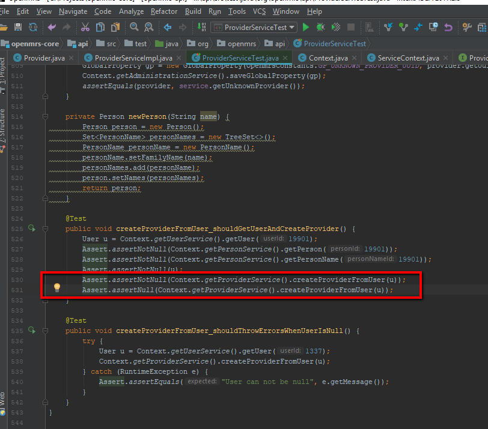
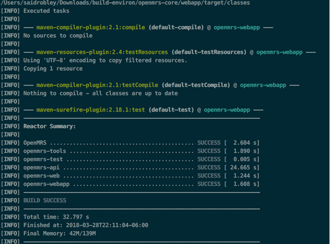
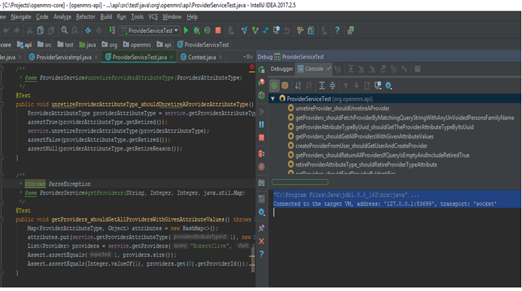

IF IT IS BROKE; DO FIX IT!
by OpenFOSS
 Gideon Nyamachere |
Jonathan Grant |
 Said Robley |
 Tell Hause |
KINKS IN THE WORKFLOW
Issues close rapidly
- Research > meeting > claim > work
- Claim > meeting > work
Issues are often redundant
- Develop solution
Jonathan Grant
MAKE NO ASSUMPTIONS
- We assumed the existent tests were good:
- Until we saw this 
- And this
- How we solved these issues
- We tested the tests
- Made sure the existent tests are making proper assertions
- Verified the results
- Checked if the existing code works as expected
Said Robley
Effects of Siloing
- OpenFOSS’ first pull request.
- Theory of Constraints
- “The chain is only as strong as the weakest link.”
- The sooner you start, the sooner you learn.
- Is your team’s documentation known and clearly visible to everyone?
Tell Hause
Effects of Siloing
- OpenFOSS’ first pull request.
- Theory of Constraints
- “The chain is only as strong as the weakest link.”
- The sooner you start, the sooner you learn.
- Is your team’s documentation known and clearly visible to everyone?
- Share your insights when working alone.
- Does your process enable your team to get work done?
- Removing our organization from future pull requests.
Tell Hause
TOOLING
- The right tools will multiply your productivity
- Tools we used to run tests:
- Unit testing takes time
- Not easily accessible
- Lots of configuration options to remember
- Great for integration testing
- Focused output and tests
- Assistance debugging: fixing bug issues
- Obsolete classes/code easily identified
- One glass pane
mvn-test build
IntelliJ IDEA
Gideon Nyamachere


Gideon Nyamachere
CONCLUSION:
If your process is slowing you down, change it!